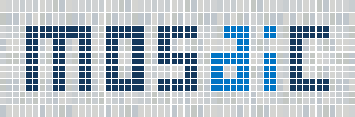
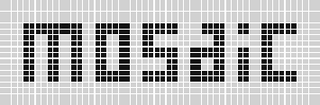
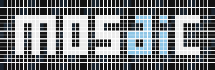

mosaic · 3C.4N · production assets
Micro tessera · navy inlay
The exact micro-tessera construction of 3C.4 with 3C.2’s deep-navy base lettering. The blue a·i remains distinct, but the full wordmark feels cooler and more institutional.
Primary · full color3C.4N

Footer scale240W
Monochrome1C

On darkREV
